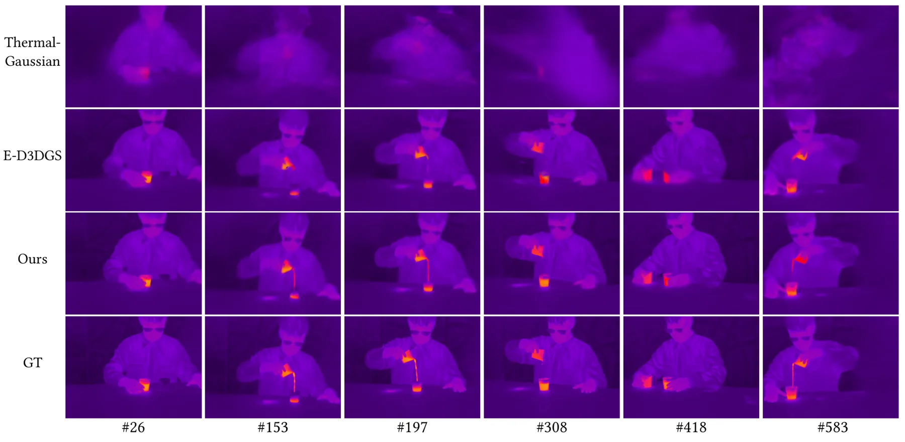
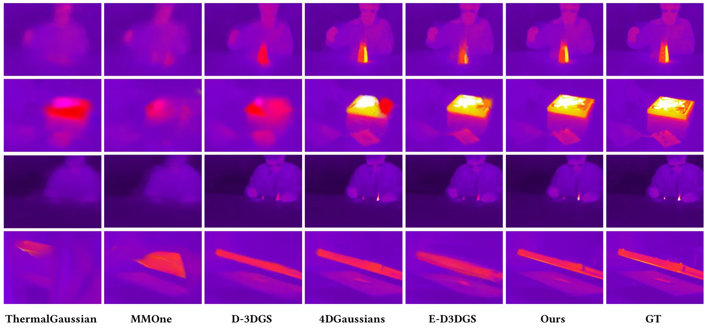
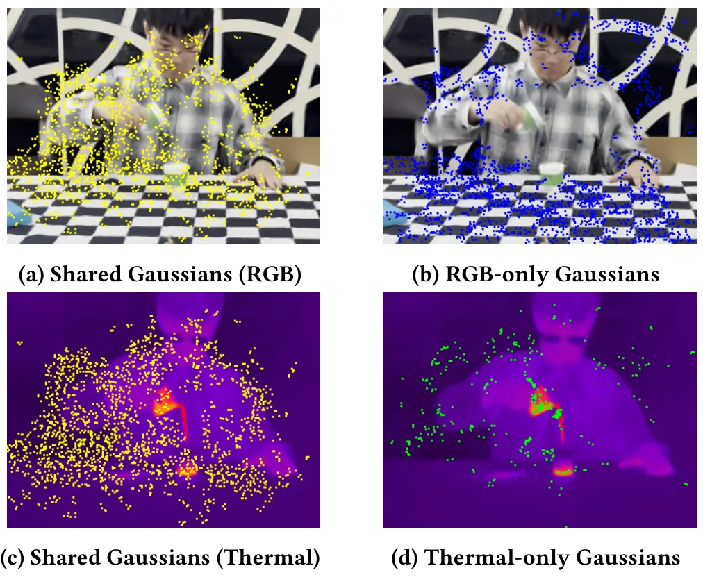
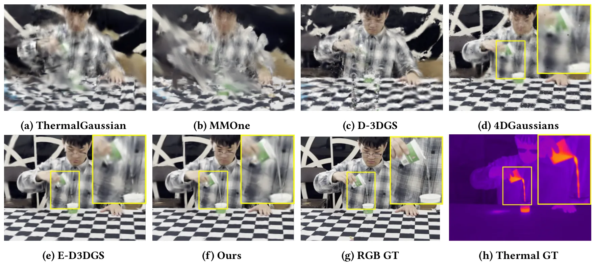
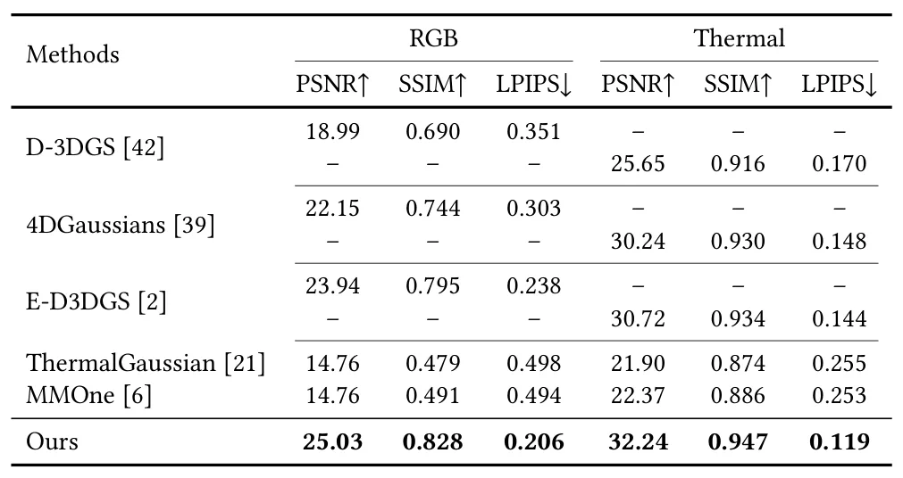
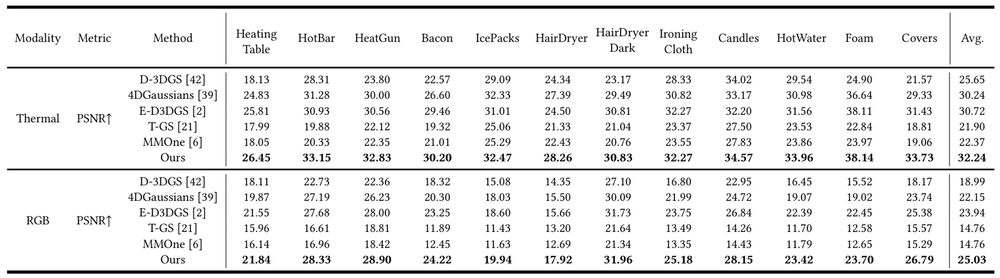
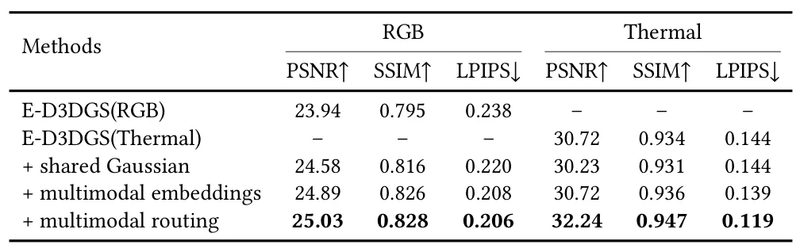

Dynamic Thermal Gaussians：多模态 4D Gaussian Splatting
Dynamic Thermal Gaussians: Multimodal 4D Gaussian Splatting
新建 DynamicRGBT-Scenes 数据集，包含 12 个同步双视角 RGB-Thermal 序列；多模态路由在共享几何骨干上按细节区域生成模态专属点。
作者、单位与技术谱系 · Research context
作者与单位
研究脉络
- 静态 3D thermal reconstruction方法上游关系：本文从静态热场重建推进到 RGB、thermal、geometry 同时随时间变化。[arXiv 官方 HTML v1]
- 动态 Gaussian Splatting方法基座关系：本文借用动态 Gaussian 的时空表示，并增加共享/专属多模态路由。[arXiv 官方 HTML v1]
合作网络
- DTG作者单位 → Lishui University / Hangzhou Dianzi University 等关系：共同署名/作者单位[arXiv 官方 HTML v1]
- DTGDynamicRGBT-Scenes → 研究社区关系：公开数据集发布[arXiv 官方 HTML v1]
作者和单位是原文事实；技术脉络是基于公开原文/项目关系的解读；未据此推断导师或师生关系。
方法本质拆解 · What actually changed
是不是微调？
论文提出完整的 multimodal dynamic representation，并在新建 RGB-Thermal 数据上训练/优化重建参数；具体训练轮数与冻结策略需按 Implementation Details 核验。该工作不是仅做测试时热图配准。
有没有额外约束？
共享几何 substrate 是跨模态一致性的结构约束，模态专属 Gaussian 则提供局部细节自由度。约束作用在 RGB、thermal 与 geometry 的联合表达。
推理/后端到底做了什么？
推理需要执行时空 deformation、multimodal embedding 和 routing，决定哪些区域使用共享点、哪些区域增生模态专属点。它不是传统因子图后端。
方法本质是什么？
把颜色和温度先锚到共同几何，再用路由把模态差异限制在需要细节的区域。这样既保持跨模态空间对齐，又避免单一共享表示无法表达热细节。
输入 RGB-Thermal 时序 + 共享几何 Gaussian 与模态路由 + 时空变形 → 统一的动态外观/温度重建。

动机与问题Motivation
动机与问题
现有 3D thermal reconstruction 多假设温度分布静态，难以描述热传导、对流和辐射造成的时间变化。复杂场景中物体运动、几何变化和温度变化需要共享空间锚点。
方法Method
方法总览
模型用共享 multimodal Gaussians 作为几何骨干，同时允许 RGB 与 thermal 在细节区域生成 modality-specific Gaussians。multimodal embeddings 增强运动表达，routing 机制控制共享与专属表示的分配。
关键技术细节
颜色、热量和几何被绑定到同一时空变形框架；专属 Gaussian 只在模态细节需要时扩展容量。该设计试图在跨模态一致性和单模态细节之间建立可控的表示分工。

实验Experiments
实验设置
DynamicRGBT-Scenes 包含 12 个同步双视角序列，由 FLIR A700 与 iPhone 15 Pro 设备对采集，覆盖高频温度变化。实验分别评估 thermal view synthesis、RGB view synthesis，并报告实现细节、指标、基线和消融。
实验数字与比较
已核验数字包括 12 个同步双视角序列以及 FLIR A700/iPhone 15 Pro 采集配置；论文摘要称 RGB 与温度均获得 high-fidelity 时空重建。具体 PSNR/SSIM 或 thermal 指标、相对基线提升需查正文表格，当前待核验。
消融/失败边界
原文单列 multimodal embedding、routing 与重建组件的 ablation；去掉共享几何锚点或模态路由会削弱跨模态一致性或细节容量，精确数字待核验。快速热变化、跨设备标定误差和遮挡会构成明显失败边界。
局限与迁移Limitations & Transfer
局限与待核验
作者明确指出公开热场数据不足，并以新数据集补足这一缺口；数据规模只有 12 个序列，跨设备、跨场景和长期热动力学泛化仍需验证。医疗诊断仅在背景相关工作中出现，本条聚焦非医疗热场与空间重建。
与你研究路线的关系
可迁移模块是共享几何状态加模态专属不确定性/容量的分层表示，适合做多传感器可靠性门控。下一步可把热模态作为辅助观测，比较共享/专属 Gaussian 的校准误差、跨模态遮挡鲁棒性和在线更新成本。
{kind=link}

{kind=link}

{kind=link}

{kind=link}

{kind=link}

{kind=link}
